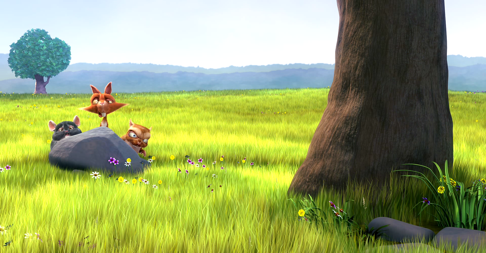

Today PlayerScreen renders the TV chrome verbatim on a phone: 48 dp gutters, D-pad pills with focus rings, forced sensor-landscape, no gestures, no safe-area reads. Three directions follow, differing on one axis only — where the secondary controls live — because that is what decides whether it can be used with one thumb.
Everything in the bottom third, in the order the TV uses it: position, then transport, then the secondary row. Nothing new to learn and nothing new to name — the transport pills simply grow to 46 px and lose their focus rings.

Landscape 915 × 412
The big three sit centred on the picture, at the size the gesture equivalents want anyway. The seek bar keeps the full bottom width and clears the home indicator. The three secondary controls become a right-edge column — one tap each, all inside the right thumb's arc. In portrait the same three rotate into a row above the seek bar: same order, same icons.
iPhone · portrait 393 × 852
Top bar, seek bar, play, and a single More that opens one sheet holding subtitles, episodes, lock and quality. Double-tap carries the seeking, so even the skip buttons go.
| Direction | Taps to subtitles | Chrome over picture | One-handed landscape | Note |
|---|---|---|---|---|
| 1 · Grounded | 1 | Bottom 250 px | Poor — the secondary row sits centre-bottom | Familiar to whoever built the TV app; familiar to nobody who uses a phone. |
| 2 · Thumb rail | 1 | Bottom 190 px + a 66 px right column | Good — every secondary control is inside the right thumb's arc; the left thumb owns back and brightness | Rail is new vocabulary. Skip Intro pill moves left of it. Portrait folds the rail into a row. |
| 3 · Sheet-first | 2 | Bottom 128 px | Good, but only because there is almost nothing to reach | Most picture, calmest frame, needs no change for Live TV. Depth is the price. |
The TV's 3 600 ms is right for a remote you put down. On a phone the chrome is summoned by the same tap that could be a mis-tap, so 3 000 ms is the proposal, with two exceptions that hold it open — a sheet is open, or a drag is in progress. Nothing auto-hides while Locked.
All twelve are drawn for Direction 2 on the canvas, plus two that are not in §A1: the Live TV player and the iOS safe-area set.
| State | What it is |
|---|---|
| 1 · 2 | Chrome visible / hidden. Hidden is the default; a tap on a control never toggles it away. |
| 3 | Gestures: double-tap ripple (repeats accumulate 10 → 20 → 30), brightness left, volume right, pinch fit/fill toast. |
| 4 | Locked — lock glyph only, "Locked · hold to unlock" on tap, gestures dead, auto-hide suspended. |
| 5 | Scrubbing — 26 px knob, time bubble, ghost bar. No thumbnail. |
| 6 | Audio & subtitles sheet, both levels, plus Subtitle size S · M · L. |
| 8 · 9 · 10 | Skip pill (left of the rail), next-up (corner card in landscape, full-width strip in portrait), episode rail as a season sheet. |
| 11 · 12 | Cold start · stall · failure (R218 and R237, unchanged), and Rotate — which appears only when the system has portrait locked. |
Eight went to my lean; Speed was removed outright. Recorded as the build's instructions rather than as questions.
Where the secondary controls live — the whole round.
Held open while a sheet is open or a drag runs; suspended entirely while locked.
Replaces today's forced sensor-landscape, which leaves a phone held upright with no player at all.
Both. Neither exists in any seam today — there is no brightness API in the codebase — so both are new work.
The one control this design adds to R180's picker — and the same S/M/L a cast then uses on the TV.
Removed entirely. No rail item, no sheet, no More entry, and no new seam member — which also removes a Wasm actual and a future iOS actual from the work.
On skip, on lock, on a seek release. Cheap, and the thing that makes a transport feel mechanical rather than painted.
Drawn next, on the Settings screen — prospective phase 218 + R244.
Drawn beside the cast button in round 2, so the two affordances that compete for the same corner are decided together.
A phone on cellular gets no bitrate cap at all.
Phase 177 and R216 give the server two inputs for MaxStreamingBitrate: the device's own decoder ceiling, and a link-derived cap from detectLinkState(). That detector handles ethernet and Wi-Fi and returns UNKNOWN for everything else — including cellular. ClientCapabilities.linkKind = "unknown" means, by its own documentation, that phase 177's link-derived cap never applies.
So a phone on LTE direct-plays a 93 Mbps remux exactly as the stue TV did before phase 177 — with the extra cost that it is someone's data plan. R183 already established that a VideoBitrate condition disqualifies direct play, so the correct knob is MaxStreamingBitrate on PlaybackInfo, fed by a viewer-facing quality setting rather than a link guess.
The research report proposes phase numbers against 216 / R243. Those were taken the same day by the Discover taxonomy pair, and 217 by the Towo removal. Verified against main today: admin runs to 217, Ravilo to R243, so the next free pair is 218 / R244 and the whole proposed ladder shifts by one. No spec is written or edited by this round.
Only three are new sentences; the rest are single words that already exist elsewhere in the app.
| Key | English | Dansk | Føroyskt |
|---|---|---|---|
| pl_lock | Lock | Lås | Lás |
| pl_locked_hint | Locked · hold to unlock | Låst · hold for at låse op | Lást · trýst og hald til at lata upp |
| pl_subtitles | Subtitles | Undertekster | Undirtekstir |
| pl_sub_size | Subtitle size | Størrelse på undertekster | Stødd á undirtekstum |
| pl_size_s/m/l | Small · Medium · Large | Lille · Mellem · Stor | Lítil · Miðal · Stór |
| pl_sub_size_note | Applies on this phone only. | Gælder kun på denne telefon. | Virkar bert á hesi telefon. |
| Key | English | Dansk | Føroyskt |
|---|---|---|---|
| pl_next | Next | Næste | Næsta |
| pl_play_now | Play now | Spil nu | Spæl nú |
| pl_cancel | Cancel | Annullér | Avlýs |
| pl_rotate | Rotate to full screen | Drej for fuld skærm | Vend fyri fulla skerm |
| pl_fit / pl_fill | Fit · Fill | Tilpas · Udfyld | Tilpassa · Fyll |
| pl_episodes | Episodes | Afsnit | Rað |
| pl_guide | Guide | Guide | Skrá |